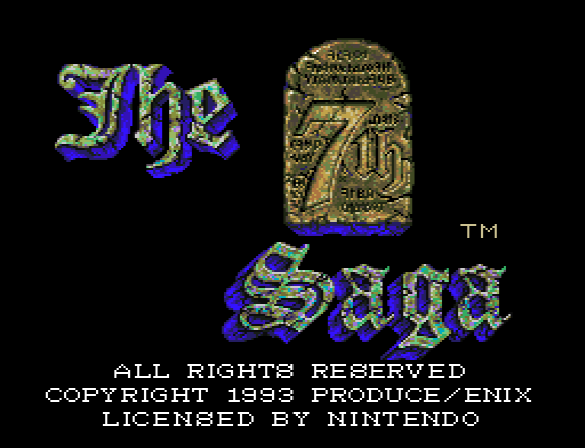
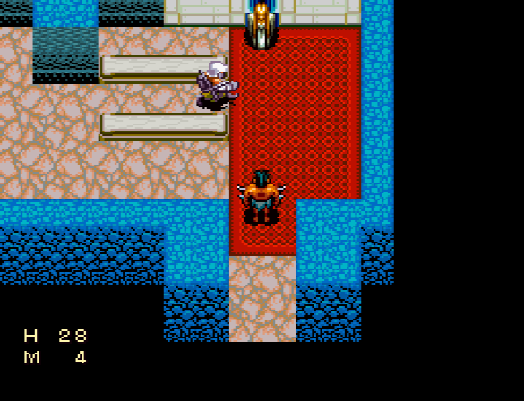
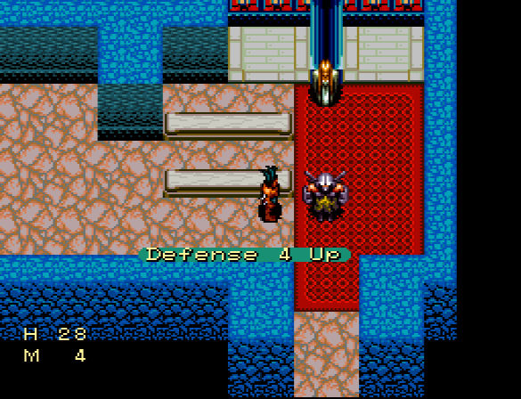

2025-03-22
Note: I wasn't the one who discovered this. Kirkq and Nitrodon gets the credit for that.
Today we're going to try figuring out just where in a PRNG sequence we might be at so we can predict upcoming RNG rolls. More specifically we'll be analyzing the MCG, also known as the Lehmer RNG, as it's being used in The 7th Saga.
Every once in a while you'll find various seeds that increase your stats permanently. While this is great, the big hitch here is that the stat increase is a random value between 1-4! You need all the stats you can get when speedrunning this game (or even just playing casually!), so getting those +4 increases is vital.
If we knew the upcoming RNG values we could predict when a seed will give a +4.
Before we get into the method, let's quickly go over some important facts about the MCG, which is responsible for handing out random numbers whenever they're needed.
The way the MCG works is simple: whenever a new value is requested, first multiply the rng state variable with some constant and then return the state:
rng_state = rng_state * multiplier;
When the modulus of an MCG is a power of two, the period will be at most a quarter of the modulus. In the case of The 7th Saga, the rng state variable is 16 bits. Any result bigger than that gets clipped off, so the modulus is 216 = 65536 which gives us a maximum period of 65536 / 4 = 16384.
At this point, you are probably not wondering... which of these 65536 values are we not reaching? Well, let me tell you anyway!
To achieve this maximum period of modulus / 4, the state and multiplier must be odd. This rules out all even numbers, which cuts away 2/4 of the possible values. Additionally, only half of all the odd values are reachable from any given starting state. This removes another 1/4 from the total values. Thus we're left with 1/4 of the 65536 potential values, that is 16384.
One last important fact: similar to the LCG, the higher the bit, the longer the period for that bit before it starts repeating its sequence:
Bit # | Period
0 | 1 (always 1)
1 | 2 (flips between 0 and 1)
2 | 2 (flips between 0 and 1)
3 | 4
4 | 8
5 | 16
6 | 32
7 | 64
8 | 128
9 | 256
10 | 512
11 | 1024
12 | 2048
13 | 4096
14 | 8192
15 | 16384
...
For example, let's say you request a new random value over and over and only keep bits 0-4. This would yield repeat sequences after a measly 8 requests, and the lower bits repeat even more often than that. Including bit 0 would be especially unwise, since it's always 1!
Games with a 16 bit MCG (or LCG) commonly discard bits 0-7 and returns bits 8-15 for this reason. The 7th Saga is no exception, returning bits 8-15.
With that, let's move on to the main part.
Alright, so we want to guarantee a +4 stat increase from seeds. When using a seed, the game pulls a random number and caps it to 0-3 by discarding all bits except the two lowest bits (that's bits 8-9 from the rng state) and adds 1 for a range of 1-4:
stat_increase = (random_value & 0b11) + 1;
To always get a +4 we need to know where we are in the RNG sequence so that the next value we get is a 3. To do that, we need some way to observe the RNG. Fortunately, someone realized that NPCs choose a walking direction by also getting a random value!
An alien taking notes of the movements of an unsuspecting church-goer.
It works much the same way - get a random number, cap it to 0-3. Each number maps to a direction to walk towards:
0: Up 1: Down 2: Left 3: Right
This means that if we use a seed when an NPC is about to walk to the right, the next random number is a 3.
By observing the movements of an NPC, we can "see" bits 8-9 by the way it's moving. Believe it or not - this is actually enough information for us to use!
The highest bit being used determines the period as mentioned in the MCG section, so bits 8-9 will have a period of 256 - NPC movement and seed stats are both moving along the same repeating 256-step sequence.
To find out where we are in this sequence, we'll observe a lone NPC's movement and write down its walk directions. Once we've gathered a few directions, we'll convert them to a list of corresponding values (0-3) and see how many instances of this list exists within the 256-step sequence. If we get more matches than just one, we need to gather more directions to ascertain where we are.
Given enough directions we'll eventually get down to one match... huh...
No matches... what do you mean, no matches?!
So we generated a list of 256 values from the MCG and compared a direction list against it, and there's no match! How can that be? The NPC is simply following the RNG!
Recall back to the MCG 101 section. We're getting 1/4 values out of the possible 65536 values a 16 bit variable can hold. All even numbers are out of the question, which still rules out 2/4, but... what about that other 1/4, those other unreachable odd numbers...?
Indeed, The 7th Saga doesn't have a fixed starting state! It's at least in part based on some frame counter, so the RNG really could be starting on any value.
To avoid the state being even, the state is always made odd by adding 1 if it's even when requesting a value.
We didn't get a match earlier because we were only checking one set of reachable odd numbers, while the game was using the other set of odd numbers!
All we have to do is to generate two 256-step sequences based on both sets of reachable odd numbers. Then we once again compare a step list against these two until only one match is found... and now we've found out where in the RNG sequence we are! When the NPC's next step would be to the right (3), we cut in and use our stat seed.
Bam! +4 points to us!